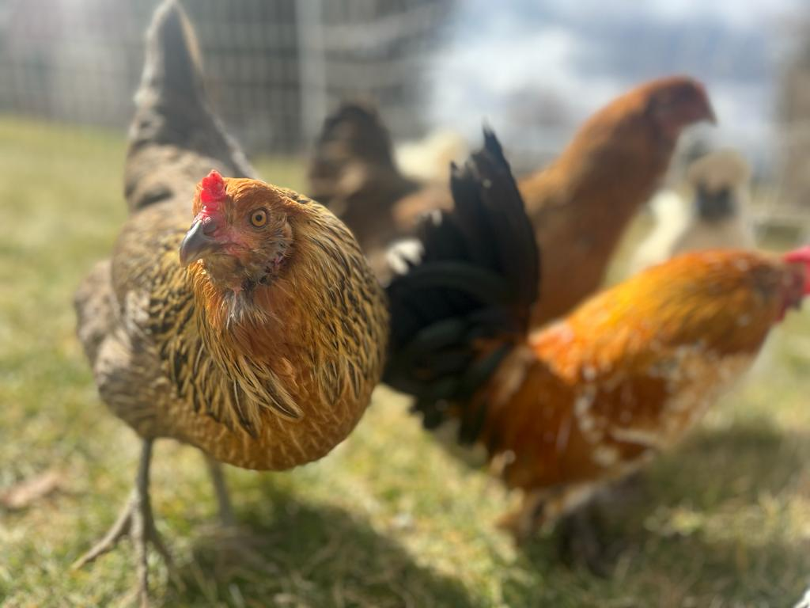

Cameron Poe
Broody Girl, digs holes in the lawn.

Pollux Troy
Blue eggs, our resident escape artist.

Bilbo Baggins
Feathery feet, our tiny king.
Broody Girl, digs holes in the lawn.
Blue eggs, our resident escape artist.
Feathery feet, our tiny king.